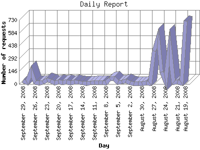

The Daily Report identifies the activity for each day within the reporting period. Remember that one page hit can result in several server requests as the images for each page are loaded.

| Day | Number of requests | Number of page requests | |
|---|---|---|---|
| 1. | August 19, 2008 | 721 | 28 |
| 2. | August 20, 2008 | 9 | 5 |
| 3. | August 21, 2008 | 23 | 9 |
| 4. | August 22, 2008 | 18 | 5 |
| 5. | August 23, 2008 | 422 | 115 |
| 6. | August 24, 2008 | 25 | 5 |
| 7. | August 25, 2008 | 138 | 24 |
| 8. | August 26, 2008 | 527 | 81 |
| 9. | August 27, 2008 | 376 | 23 |
| 10. | August 28, 2008 | 8 | 0 |
| 11. | August 29, 2008 | 11 | 2 |
| 12. | August 30, 2008 | 5 | 1 |
| 13. | August 31, 2008 | 7 | 2 |
| 14. | September 1, 2008 | 4 | 0 |
| 15. | September 2, 2008 | 9 | 1 |
| 16. | September 3, 2008 | 32 | 1 |
| 17. | September 4, 2008 | 23 | 6 |
| 18. | September 5, 2008 | 19 | 5 |
| 19. | September 6, 2008 | 61 | 7 |
| 20. | September 7, 2008 | 59 | 9 |
| 21. | September 8, 2008 | 10 | 1 |
| 22. | September 9, 2008 | 15 | 2 |
| 23. | September 10, 2008 | 15 | 10 |
| 24. | September 11, 2008 | 16 | 0 |
| 25. | September 12, 2008 | 11 | 1 |
| 26. | September 13, 2008 | 8 | 1 |
| 27. | September 14, 2008 | 12 | 1 |
| 28. | September 15, 2008 | 16 | 2 |
| 29. | September 16, 2008 | 20 | 2 |
| 30. | September 17, 2008 | 12 | 0 |
| 31. | September 18, 2008 | 21 | 4 |
| 32. | September 19, 2008 | 16 | 2 |
| 33. | September 20, 2008 | 24 | 5 |
| 34. | September 21, 2008 | 12 | 0 |
| 35. | September 22, 2008 | 37 | 5 |
| 36. | September 23, 2008 | 44 | 4 |
| 37. | September 24, 2008 | 19 | 4 |
| 38. | September 25, 2008 | 10 | 0 |
| 39. | September 26, 2008 | 17 | 5 |
| 40. | September 27, 2008 | 141 | 14 |
| 41. | September 28, 2008 | 19 | 3 |
| 42. | September 29, 2008 | 32 | 11 |
Most active day August 12, 2008 : 134 pages sent. 721 requests handled.
Daily average: 9 pages sent. 72 requests handled.
This report was generated on September 30, 2008 10:53.
Report time frame March 7, 2008 08:09 to September 29, 2008 23:47.
| Web statistics report produced by: analog 6.0 / Report Magic 2.21 |